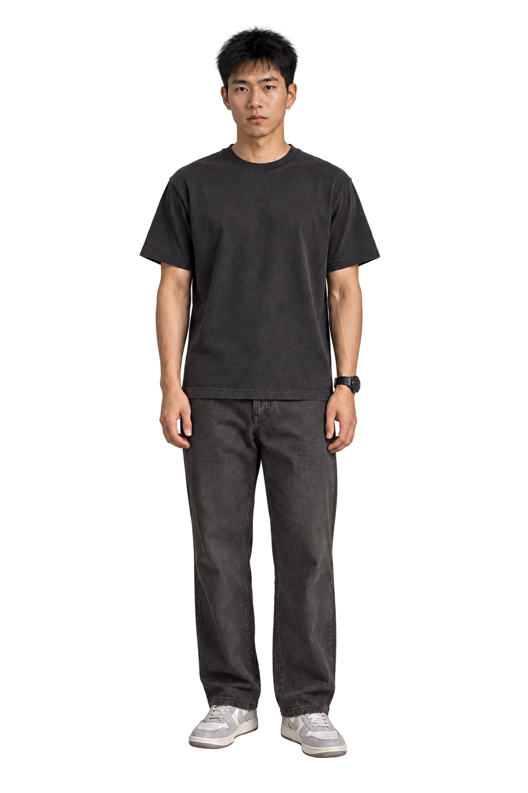
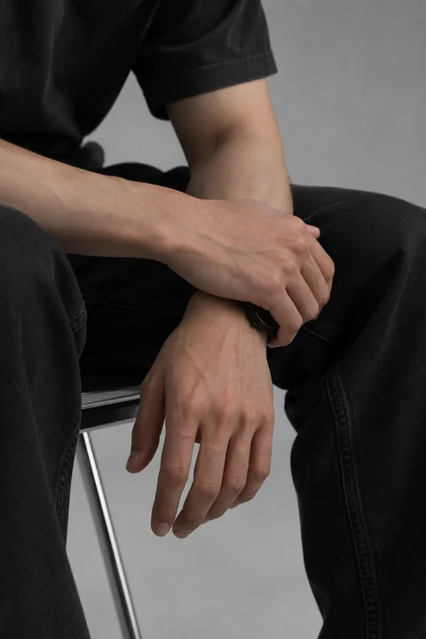
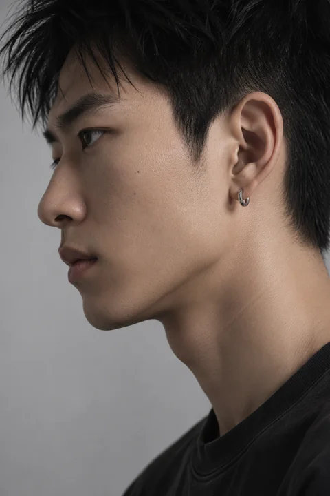
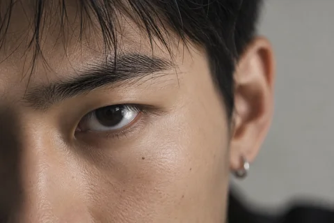
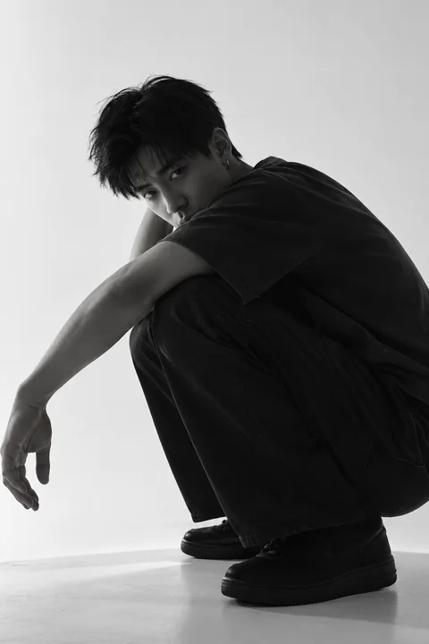
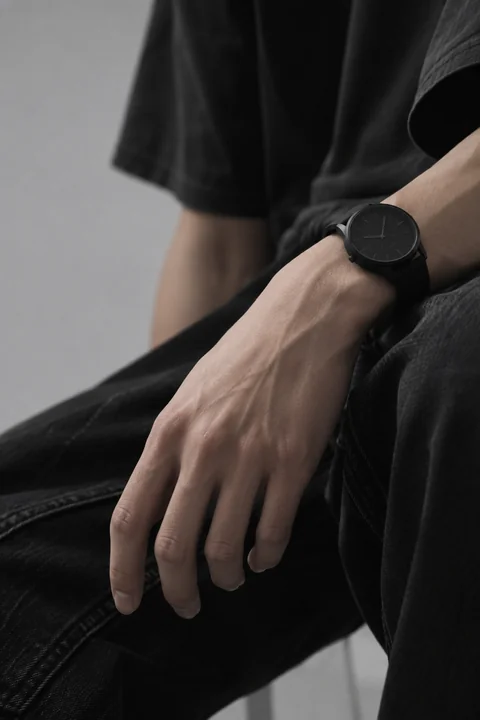
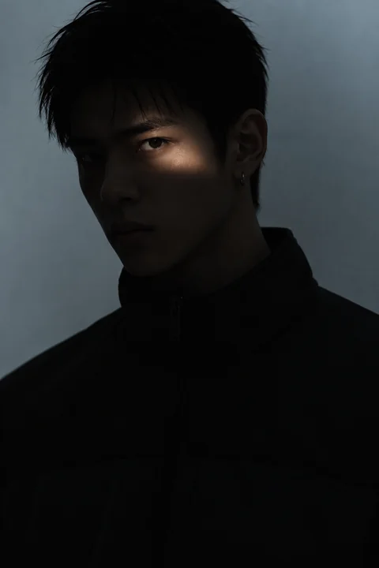
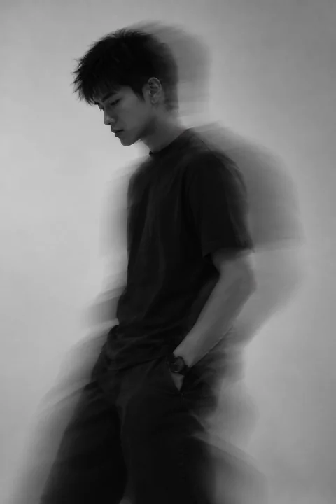

01 / 05
MEET
THE CHARACTER
KAI
AI Character Project
by SU STUDIO

DRAG TO ROTATESWIPE TO ROTATE. Use left and right arrow keys to change view. Escape returns to front.
MEET
THE CHARACTER
AI Character Project
by SU STUDIO

DRAG TO ROTATESWIPE TO ROTATE. Use left and right arrow keys to change view. Escape returns to front.







Drag or scroll horizontally to explore seven photographs. On a keyboard, use the left and right arrow keys. On touch screens, swipe horizontally; vertical scrolling remains available.
IMAGES, MOMENTS, FRAGMENTS.
A collection of everyday scenes,
observations and imagined moments
from Kai's evolving world.
04 / 05
聲音讓角色有了另一種存在方式。
現在，聽聽 Kai 怎麼說話。
A character in progress.
A world taking shape.
KAI is an ongoing AI character project by SU STUDIO, exploring how a digital character can develop a presence through images, movement and everyday moments.
From character studies to fragments of his world, the project brings together visual storytelling and experiments in character consistency. Each piece adds another layer to who Kai might become.
KAI 是 SU STUDIO 持續發展中的 AI 角色計畫，透過影像、動態與日常片段，探索數位角色如何逐漸建立自己的存在感。
從角色觀察到生活場景，我們以視覺敘事與角色一致性的實驗，慢慢形塑 Kai 的樣貌與世界。這個計畫仍在進行，每一段創作都是新的探索。